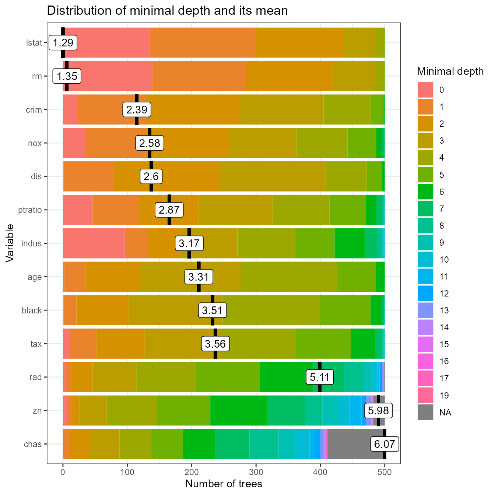
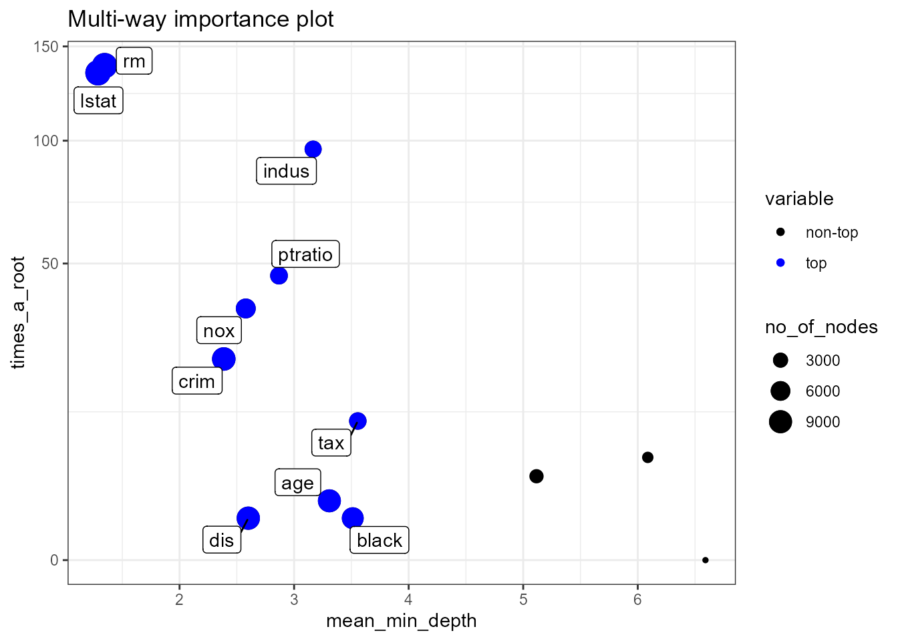
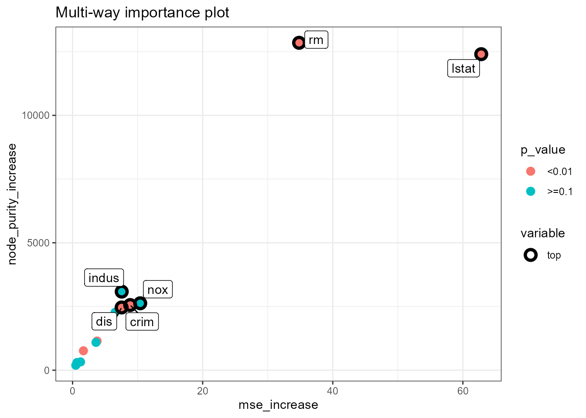
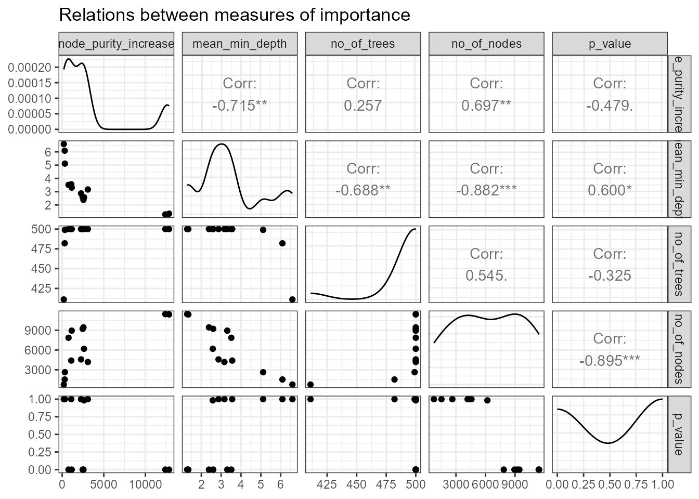
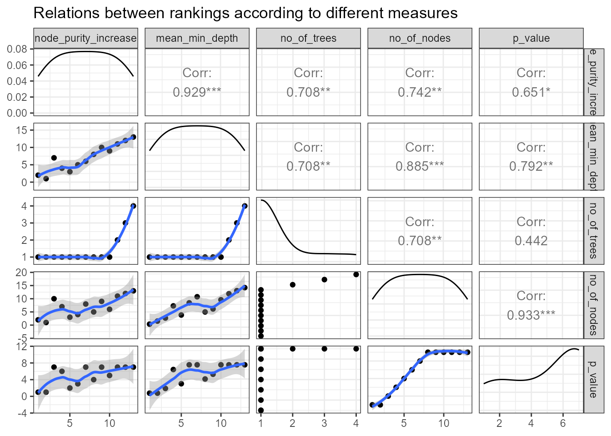
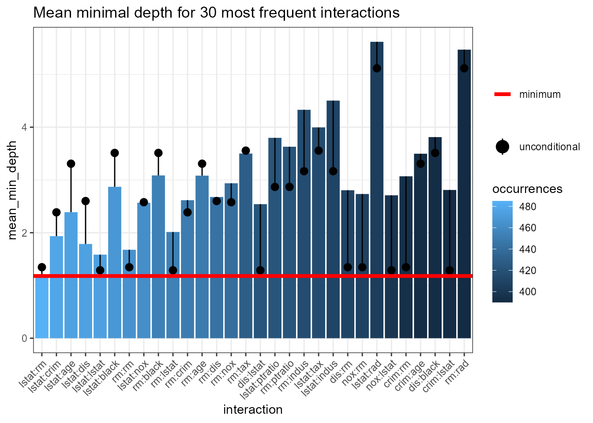
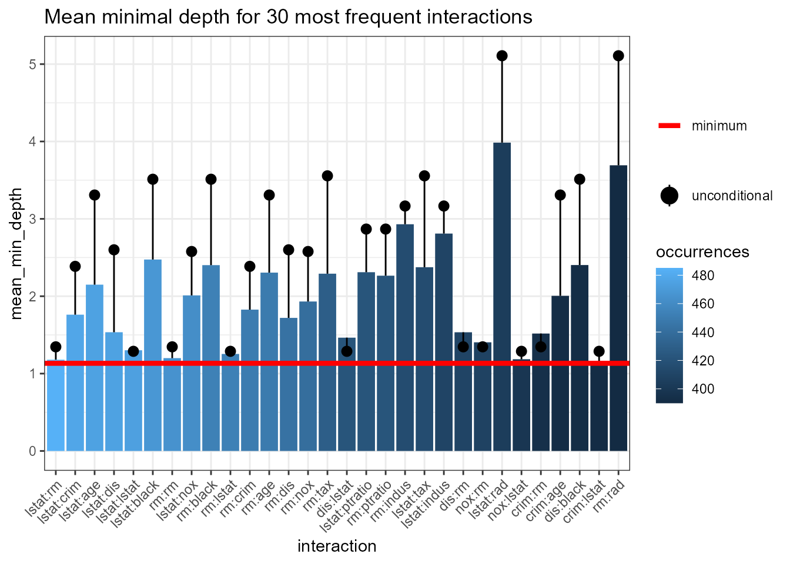
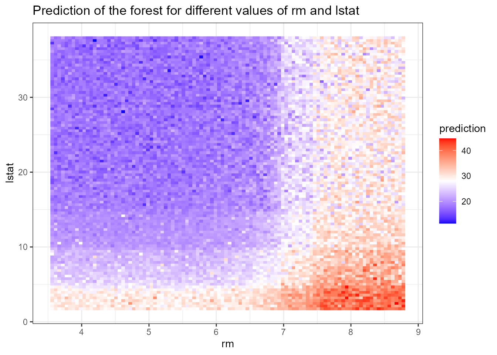

vignettes/randomForestExplainer.Rmd
randomForestExplainer.RmdThis vignette demonstrates how to use the randomForestExplainer package. We will use the Boston from package MASS. In fact, the development of randomForestExplainer was motivated by problems that include lots of predictors and not many observations. However, as they usually require growing large forests and are computationally intensive, we use the small Boston data set here and encourage you to follow our analysis of such large data set concerning glioblastoma here: initial vignette.
We will use the following packages:
library(randomForest)
# devtools::install_github("MI2DataLab/randomForestExplainer")
library(randomForestExplainer)The data set Boston has the following structure:
data(Boston, package = "MASS")
Boston$chas <- as.logical(Boston$chas)
str(Boston)## 'data.frame': 506 obs. of 14 variables:
## $ crim : num 0.00632 0.02731 0.02729 0.03237 0.06905 ...
## $ zn : num 18 0 0 0 0 0 12.5 12.5 12.5 12.5 ...
## $ indus : num 2.31 7.07 7.07 2.18 2.18 2.18 7.87 7.87 7.87 7.87 ...
## $ chas : logi FALSE FALSE FALSE FALSE FALSE FALSE ...
## $ nox : num 0.538 0.469 0.469 0.458 0.458 0.458 0.524 0.524 0.524 0.524 ...
## $ rm : num 6.58 6.42 7.18 7 7.15 ...
## $ age : num 65.2 78.9 61.1 45.8 54.2 58.7 66.6 96.1 100 85.9 ...
## $ dis : num 4.09 4.97 4.97 6.06 6.06 ...
## $ rad : int 1 2 2 3 3 3 5 5 5 5 ...
## $ tax : num 296 242 242 222 222 222 311 311 311 311 ...
## $ ptratio: num 15.3 17.8 17.8 18.7 18.7 18.7 15.2 15.2 15.2 15.2 ...
## $ black : num 397 397 393 395 397 ...
## $ lstat : num 4.98 9.14 4.03 2.94 5.33 ...
## $ medv : num 24 21.6 34.7 33.4 36.2 28.7 22.9 27.1 16.5 18.9 ...We use the randomForest::randomForest function to train a forest of \(B=500\) trees (default value of the mtry parameter of this function), with option localImp = TRUE. The forest is supposed to predict the median price of an apartment medv based on its characteristics.
set.seed(2017)
forest <- randomForest(medv ~ ., data = Boston, localImp = TRUE)The prediction accuracy of our forest can be summarized as follows:
forest##
## Call:
## randomForest(formula = medv ~ ., data = Boston, localImp = TRUE)
## Type of random forest: regression
## Number of trees: 500
## No. of variables tried at each split: 4
##
## Mean of squared residuals: 9.793518
## % Var explained: 88.4Now, we will use all the functions of randomForestExplainer in turn and comment on the obtained results.
To obtain the distribution of minimal depth we pass our forest to the function min_depth_distribution and store the result, which contains the following columns (we save this and load it from memory as it takes a while):
# min_depth_frame <- min_depth_distribution(forest)
# save(min_depth_frame, file = "min_depth_frame.rda")
load("min_depth_frame.rda")
head(min_depth_frame, n = 10)## tree variable minimal_depth
## 1 1 age 4
## 2 1 black 3
## 3 1 chas 10
## 4 1 crim 4
## 5 1 dis 1
## 6 1 indus 4
## 7 1 lstat 1
## 8 1 nox 2
## 9 1 ptratio 3
## 10 1 rad 6Next, we pass it to the function plot_min_depth_distribution and under default settings obtain obtain a plot of the distribution of minimal depth for top ten variables according to mean minimal depth calculated using top trees (mean_sample = "top_trees"). We could also pass our forest directly to the plotting function but if we want to make more than one plot of the minimal depth distribution is more efficient to pass the min_depth_frame to the plotting function so that it will not be calculated again for each plot (this works similarly for other plotting functions of randomForestExplainer).
# plot_min_depth_distribution(forest) # gives the same result as below but takes longer
plot_min_depth_distribution(min_depth_frame)The function plot_min_depth_distribution offers three possibilities when it comes to calculating the mean minimal depth, which differ in he way they treat missing values that appear when a variable is not used for splitting in a tree. They can be described as follows:
mean_sample = "all_trees" (filling missing value): the minimal depth of a variable in a tree that does not use it for splitting is equal to the mean depth of trees. Note that the depth of a tree is equal to the length of the longest path from root to leave in this tree. This equals the maximum depth of a variable in this tree plus one, as leaves are by definition not split by any variable.
mean_sample = "top_trees" (restricting the sample): to calculate the mean minimal depth only \(\tilde{B}\) out of \(B\) (number of trees) observations are considered, where \(\tilde{B}\) is equal to the maximum number of trees in which any variable was used for splitting. Remaining missing values for variables that were used for splitting less than \(\tilde{B}\) times are filled in as in mean_sample = "all_trees".
mean_sample = "relevant_trees" (ignoring missing values): mean minimal depth is calculated using only non-missing values.
Note that the \(x\)-axis ranges from zero trees to the maximum number of trees in which any variable was used for splitting (\(\tilde{B}\)) which is in this case equal to 500 and is reached by all variables plotted.
The ordering of variables in our plot by their mean minimal depth seems quite accurate when we look at the distribution of minimal depth, though one could argue that for example indus should be ranked higher than dis as the latter is never used for splitting at the root. Usually we would obtain different orderings when changing the mean_sample option but this is not the case if variables are used for splitting in all trees as this option only influences how and whether missing values are treated. The default option, "top_trees", penalizes missing values and this penalization makes the interpretation of the values less obvious – to address that we can calculate the mean minimal depth only using non-missing observations (mean_sample = "relevant_trees"). For forests with many variables with a lot of missing observations we should always consider adding the min_no_of_trees option so that only variables used for splitting in at least the declared number of trees will be considered for the plot. This allows us to avoid selecting variables that have been by chance used for splitting e.g., only once but at the root (their mean would be equal to 0). However, in our case we can simply increase the k parameter to plot all trees:
plot_min_depth_distribution(min_depth_frame, mean_sample = "relevant_trees", k = 15)
Clearly, using only relevant trees for calculating the mean does not change it for variables that have no missing values. Also, in this case the change does not influence the ordering of variables, but of course this usually not the case in more complex examples.
Regardless of the exact parameters used in plot_min_depth_distribution, looking at the whole distribution of minimal depth offers a lot more insight into the role that a predictor plays in a forest in contrast to looking only at the mean, especially as it can be calculated in more than one way. Additionally, the function allows us to specify the maximum number of variables plotted k, whether the values of mean minimal depth should be scaled to the \([0,1]\) interval (mean_scale, logical), the number of digits to round the mean to for display (mean_round) and the title of the plot (main).
To further explore variable importance measures we pass our forest to measure_importance function and get the following data frame (we save and load it from memory to save time):
# importance_frame <- measure_importance(forest)
# save(importance_frame, file = "importance_frame.rda")
load("importance_frame.rda")
importance_frame## variable mean_min_depth no_of_nodes mse_increase node_purity_increase
## 1 age 3.308000 8936 3.7695582 1144.6959
## 2 black 3.512000 7855 1.6677224 762.5438
## 3 chas 6.591152 761 0.4931158 193.7997
## 4 crim 2.386000 9434 8.8550476 2556.8119
## 5 dis 2.600000 9210 7.5408462 2461.5665
## 6 indus 3.166000 4182 7.5565917 3083.5072
## 7 lstat 1.288000 11443 62.8221475 12401.4000
## 8 nox 2.578000 6187 10.3991589 2625.6542
## 9 ptratio 2.868000 4572 6.5315832 2269.6530
## 10 rad 5.115968 2631 1.2258054 324.9312
## 11 rm 1.346000 11394 34.8226290 12848.2579
## 12 tax 3.556000 4402 3.5985825 1090.7962
## 13 zn 6.087424 1529 0.6720070 300.3424
## no_of_trees times_a_root p_value
## 1 500 2 8.381103e-225
## 2 500 1 5.822067e-81
## 3 411 0 1.000000e+00
## 4 500 23 6.498487e-313
## 5 500 1 1.188152e-271
## 6 500 96 1.000000e+00
## 7 500 135 0.000000e+00
## 8 500 36 9.833401e-01
## 9 500 46 1.000000e+00
## 10 499 4 1.000000e+00
## 11 500 139 0.000000e+00
## 12 500 11 1.000000e+00
## 13 482 6 1.000000e+00It contains 13 rows, each corresponding to a predictor, and 8 columns of which one stores the variable names and the rest store the variable importance measures of a variable \(X_j\):
accuracy_decrease (classification) – mean decrease of prediction accuracy after \(X_j\) is permuted,
gini_decrease (classification) – mean decrease in the Gini index of node impurity (i.e. increase of node purity) by splits on \(X_j\),
mse_increase (regression) – mean increase of mean squared error after \(X_j\) is permuted,
node_purity_increase (regression) – mean node purity increase by splits on \(X_j\), as measured by the decrease in sum of squares,
mean_minimal_depth – mean minimal depth calculated in one of three ways specified by the parameter mean_sample,
no_of_trees – total number of trees in which a split on \(X_j\) occurs,
no_of_nodes – total number of nodes that use \(X_j\) for splitting (it is usually equal to no_of_trees if trees are shallow),
times_a_root – total number of trees in which \(X_j\) is used for splitting the root node (i.e., the whole sample is divided into two based on the value of \(X_j\)),
p_value – \(p\)-value for the one-sided binomial test using the following distribution: \[Bin(\texttt{no_of_nodes},\ \mathbf{P}(\text{node splits on } X_j)),\] where we calculate the probability of split on \(X_j\) as if \(X_j\) was uniformly drawn from the \(r\) candidate variables \[\mathbf{P}(\text{node splits on } X_j) = \mathbf{P}(X_j \text{ is a candidate})\cdot\mathbf{P}(X_j \text{ is selected}) = \frac{r}{p}\cdot \frac{1}{r} = \frac{1}{p}.\] This test tells us whether the observed number of successes (number of nodes in which \(X_j\) was used for splitting) exceeds the theoretical number of successes if they were random (i.e. following the binomial distribution given above).
Measures (a)-(d) are calculated by the randomForest package so need only to be extracted from our forest object if option localImp = TRUE was used for growing the forest (we assume this is the case). Note that measures (a) and (c) are based on the decrease in predictive accuracy of the forest after perturbation of the variable, (b) and (d) are based on changes in node purity after splits on the variable and (e)-(i) are based on the structure of the forest.
The function measure_importance allows you to specify the method of calculating mean minimal depth (mean_sample parameter, default "top_trees") and the measures to be calculated as a character vector a subset of names of measures given above (measures parameter, default to NULL leads to calculating all measures).
Below we present the result of plot_multi_way_importance for the default values of x_measure and y_measure, which specify measures to use on \(x\) and \(y\)-axis, and the size of points reflects the number of nodes split on the variable. For problems with many variables we can restrict the plot to only those used for splitting in at least min_no_of_trees trees. By default 10 top variables in the plot are highlighted in blue and labeled (no_of_labels) – these are selected using the function important_variables, i.e. using the sum of rankings based on importance measures used in the plot (more variables may be labeled if ties occur).
# plot_multi_way_importance(forest, size_measure = "no_of_nodes") # gives the same result as below but takes longer
plot_multi_way_importance(importance_frame, size_measure = "no_of_nodes")
Observe the marked negative relation between times_a_root and mean_min_depth. Also, the superiority of lstat and rm is clear in all three dimensions plotted (though it is not clear which of the two is better). Further, we present the multi-way importance plot for a different set of importance measures: increase of mean squared error after permutation (\(x\)-axis), increase in the node purity index (\(y\)-axis) and levels of significance (color of points). We also set no_of_labels to five so that only five top variables will be highlighted (as ties occur, six are eventually labeled).
plot_multi_way_importance(importance_frame, x_measure = "mse_increase", y_measure = "node_purity_increase", size_measure = "p_value", no_of_labels = 5)
As in the previous plot, the two measures used as coordinates seem correlated, but in this case this is somewhat more surprising as one is connected to the structure of the forest and the other to its prediction, whereas in the previous plot both measures reflected the structure. Also, in this plot we see that although lstat and rm are similar in terms of node purity increase and \(p\)-value, the former is markedly better if we look at the increase in MSE. Interestingly, nox and indus are quite good when it comes to the two measures reflected on the axes, but are not significant according to our \(p\)-value, which is a derivative of the number of nodes that use a variable for splitting.
Generally, the multi-way importance plot offers a wide variety of possibilities so it can be hard to select the most informative one. One idea of overcoming this obstacle is to first explore relations between different importance measures to then select three that least agree with each other and use them in the multi-way importance plot to select top variables. The first is easily done by plotting selected importance measures pairwise against each other using plot_importance_ggpairs as below. One could of course include all seven measures in the plot but by default \(p\)-value and the number of trees are excluded as both carry similar information as the number of nodes.
# plot_importance_ggpairs(forest) # gives the same result as below but takes longer
plot_importance_ggpairs(importance_frame)
We can see that all depicted measures are highly correlated (of course the correlation of any measure with mean minimal depth is negative as the latter is lowest for best variables), but some less than others. Moreover, regardless of which measures we compare, there always seem to be two points that stand out and these most likely correspond to lstat and rm (to now for sure we could just examine the importance_frame).
In addition to scatter plots and correlation coefficients, the ggpairs plot also depicts density estimate for each importance measure – all of which are in this case very skewed. An attempt to eliminate this feature by plotting rankings instead of raw measures is implemented in the function plot_importance_rankings that also includes the fitted LOESS curve in each plot.
# plot_importance_rankings(forest) # gives the same result as below but takes longer
plot_importance_rankings(importance_frame)
The above density estimates show that skewness was eliminated for all of our importance measures (this is not always the case, e.g., when ties in rankings are frequent, and this is likely for discrete importance measures such as times_a_root, then the distribution of the ranking will also be skewed).
When comparing the rankings in the above plot we can see that two pairs of measures almost exactly agree in their rankings of variables: mean_min_depth vs. mse_increase and mse_increase vs. node_purity_increase. In applications where there are many variables, the LOESS curve may be the main takeaway from this plot (if points fill in the whole plotting area and this is likely if the distributions of measures are close to uniform).
After selecting a set of most important variables we can investigate interactions with respect to them, i.e. splits appearing in maximal subtrees with respect to one of the variables selected. To extract the names of 5 most important variables according to both the mean minimal depth and number of trees in which a variable appeared, we pass our importance_frame to the function important_variables as follows:
# (vars <- important_variables(forest, k = 5, measures = c("mean_min_depth", "no_of_trees"))) # gives the same result as below but takes longer
(vars <- important_variables(importance_frame, k = 5, measures = c("mean_min_depth", "no_of_trees")))## [1] "lstat" "rm" "crim" "nox" "dis"We pass the result together with or forest to the min_depth_interactions function to obtain a data frame containing information on mean conditional minimal depth of variables with respect to each element of vars (missing values are filled analogously as for unconditional minimal depth, in one of three ways specified by mean_sample). If we would not specify the vars argument then the vector of conditioning variables would be by default obtained using important_variables(measure_importance(forest)).
# interactions_frame <- min_depth_interactions(forest, vars)
# save(interactions_frame, file = "interactions_frame.rda")
load("interactions_frame.rda")
head(interactions_frame[order(interactions_frame$occurrences, decreasing = TRUE), ])## variable root_variable mean_min_depth occurrences interaction
## 53 rm lstat 1.179381 485 lstat:rm
## 18 crim lstat 1.934738 478 lstat:crim
## 3 age lstat 2.388948 475 lstat:age
## 23 dis lstat 1.786887 475 lstat:dis
## 33 lstat lstat 1.584338 474 lstat:lstat
## 8 black lstat 2.870078 468 lstat:black
## uncond_mean_min_depth
## 53 1.346
## 18 2.386
## 3 3.308
## 23 2.600
## 33 1.288
## 8 3.512Then, we pass our interactions_frame to the plotting function plot_min_depth_interactions and obtain the following:
# plot_min_depth_interactions(forest) # calculates the interactions_frame for default settings so may give different results than the function below depending on our settings and takes more time
plot_min_depth_interactions(interactions_frame)
Note that the interactions are ordered by decreasing number of occurrences – the most frequent one, lstat:rm, is also the one with minimal mean conditional minimal depth. Remarkably, the unconditional mean minimal depth of rm in the forest is almost equal to its mean minimal depth across maximal subtrees with lstat as the root variable.
Generally, the plot contains much information and can be interpreted in many ways but always bear in mind the method used for calculating the conditional (mean_sample parameter) and unconditional (uncond_mean_sample parameter) mean minimal depth. Using the default "top_trees" penalizes interactions that occur less frequently than the most frequent one. Of course, one can switch between "all_trees", "top_trees" and "relevant_trees" for calculating the mean of both the conditional and unconditional minimal depth but each of them has its drawbacks and we favour using "top_trees" (the default). However, as plot_min_depth_interactions plots interactions by decreasing frequency the major drawback of calculating the mean only for relevant variables vanishes as interactions appearing for example only once but with conditional depth 0 will not be included in the plot anyway. Thus, we repeat the computation of means using "relevant_trees" and get the following result:
# interactions_frame <- min_depth_interactions(forest, vars, mean_sample = "relevant_trees", uncond_mean_sample = "relevant_trees")
# save(interactions_frame, file = "interactions_frame_relevant.rda")
load("interactions_frame_relevant.rda")
plot_min_depth_interactions(interactions_frame)
Comparing this plot with the previous one we see that removing penalization of missing values lowers the mean conditional minimal depth of all interactions except the most frequent one. Now, in addition to the frequent ones, some of the less frequent like rm:tax stand out.
To further investigate the most frequent interaction lstat:rm we use the function plot_predict_interaction to plot the prediction of our forest on a grid of values for the components of each interaction. The function requires the forest, training data, variable to use on \(x\) and \(y\)-axis, respectively. In addition, one can also decrease the number of points in both dimensions of the grid from the default of 100 in case of insufficient memory using the parameter grid.
plot_predict_interaction(forest, Boston, "rm", "lstat")
In the above plot we can clearly see the effect of interaction: the predicted median price is highest when lstat is low and rm is high and low when the reverse is true. To further investigate the effect of interactions we could plot other frequent ones on a grid.
The explain_forest() function is the flagship function of the randomForestExplainer package, as it takes your random forest and produces a html report that summarizes all basic results obtained for the forest with the new package. Below, we show how to run this function with default settings (we only supply the forest, training data, set interactions = TRUE contrary to the default to show full functionality and decrease the grid for prediction plots in our most computationally-intense examples) for our data set.
explain_forest(forest, interactions = TRUE, data = Boston)To see the resulting HTML document click here: Boston forest summary
For additional examples see: initial vignette.